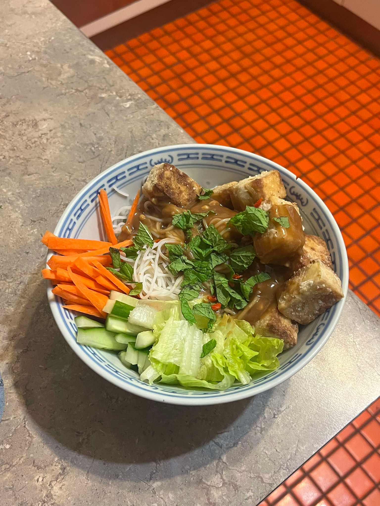

Ingredients
- Rice Paper Rolls
- Rice Noodles
- Cucumber, cut into short strips
- Carrot, cut into short thin strips
- Spring onion, slices into small strips
- Romaine lettuce or similar
- Fresh Mint
- Tofu OR Prawns, if using tofu cut into similar strips and fry with some soy sauce
- Red Chilli, optional
Peanut Lime Dressing
- 3 tbsp natural-style peanut butter
- 1 tbsp brown sugar
- 1 clove crushed garlic, miced
- 1/2 tsp grated fresh ginger
- 2 tbsp lime juice
- 2 tsp soy sauce
- 1/4 cup neutral oil
Instructions
What a good one! This is also an intuative one. Cook the noodles according to the packet and assemble at the table! This one can also be a good Gluten Free meal or a good Vegetarian variation. Also this works great in a bowl if you have no rice paper rolls! A few more noodles and its a good hit
